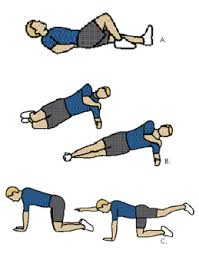

Is it just me, or does it seem like everyone you know is having a baby? As a chiropractor and a mother, I have a special interest in pre and postnatal care. The body experiences many drastic changes during the nine months of pregnancy, labour, and post-pregnancy and there are many things your Chiropractor can do to help keep you comfortable and pain free. There are no known indications for spinal manipulation therapy (SMT) throughout pregnancy, and your practitioner will be fully trained on how to modify treatment to suit your comfort1Chiropractors that actually specialize in pre and postnatal care. In addition, Chiropractors are huge proponents of preventative medicine, and can advise you on safe exercises for you to do while your pregnant or even with your baby after. In the July 2011 issue of OCA News, Dr. Jon Barrett an OBGYN at Sunnybrook Hospital discussed how pleased he was when recommending chiropractic intervention during pregnancy, “Chiropractic and medicine, we haven’t always been on the same page or spoken the same language. But physicians aren’t very good at fixing disorders of muscular balance and spinal issues. That’s what chiropractors learn about and know about. I’m really excited about this opportunity we have to work together to help our patients.”

Without being as healthy as you can be, how will it be possible to carry out life sustaining yourself and your family? To finally complete that marathon or fitness goal that you have forever dreamed of? Or, put simply, how will it be possible for you to live the best, most comfortable life you can possibly live?
To give some insight into what is involved in the work of Chiropractors for those who don’t know, they treat individuals of all ages, and they can have an positive effect on various musculoskeletal and nervous system conditions from head to toe; as well as the symptoms of patients experiencing other conditions. They spend time getting to know their patients and work closely with other healthcare professionals to give each patient the absolute best treatment possible. Chiropractors also treat those who are absent of symptoms or ailments, simply to continue preventative care and improve quality of life. They have a vast knowledge of all aspects of heath, including nutrition and exercise.
With the chiropractic profession finding itself at a crossroads with respect to its identity we sometimes find ourselves unsure of what we’re really good at. We get caught in the battle of whether chiropractors are ‘back pain specialists’ or more of a ‘wellness’ type of practitioner. I think that we’re both of these – there are many areas we can specialize in and make a large difference for people.
With respect to an article by Moshe Solomonow, it becomes evident in the study that high cyclic loading frequency is a very real thing in many peoples daily lives, particularly depending on one’s profession. High loading rates and high velocity of motion are some of the most significant risk factors for repetitive lumbar injury (RLI). RLI is a complex multifactorial syndrome and can greatly affect one’s quality of daily living. It is unavoidable that our tissues undergo significant creep in our daily lives/jobs. As a result of this, we get inflammation of the viscoelastic tissues of the lumbar spine, leading to tissue failure and degradation. This is an area in which we can effectively contribute to improving quality of life by implementing activity modifications to help people protect themselves. Mosche Solomonow includes that there is evidence supporting certain types of spinal manipulation to reduce cytokine expression in the blood, thereby, reducing inflammation.
News & Views
-
VideoIs It Safe To Adjust a Child's SpineThe question of safety can be answered in several ways...
-
FitnessMcGill's Big Three 
-
Mind & BodyMindful MeditationUnderstanding the benefits of meditation
-
FitnessPilates, The Perfect Complement To Chiropractic CareSimple exercises to do at home
-
Featured ChiropractorDr. Brian GleberzonChiropractor, researcher, technique instructor and OCA Board Member...
-
FoodShop Smart For Organic ProduceThe dirty dozen, the clean fifteen
-
Food & Drink5 DIY Sports Drinks to Help Keep You HydratedMany formulas are loaded with sugar and dyes. Try these natural options
-
Mind & BodyThe Weird Reason Some People Are Allergic to Fruits and VeggiesOral allergy syndrome can cause reactions in people with environmental allergies
-
Food5 Things You Should Know About The Bulletproof DietThe eating philosophy from the creator of Bulletproof Coffee
-
FitnessOptimizing Your Sport Performance With Chiropractic CareA chemical-free way to improve your game